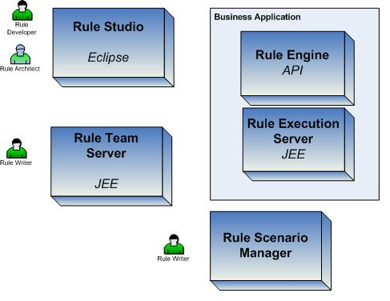

| Task: Develop Business Rule Application Architecture |
 |
|
Purpose
| Develop the piece of the software architecture related to the execution of the rules, and their management. |
Relationships
| Roles | Primary Performer: | Additional Performers: |
|---|---|---|
| Inputs | Mandatory:
| Optional:
|
| Outputs |
|
|
Main Description
The architect has to address as soon as possible in the project life cycle:
For a BRMS deployment architect needs to integrate the following components within the IT architecture:
 |
Steps
|
Analyze business and technical requirements
Design the decision service interface
Implement the interface with POJO / EJB or .Net classes
Add the connection code to the BRE
Design the control parameters to add to the context of the rule execution
Design the transaction propagation
Design the exception reporting
Assess Performance
|
Key Considerations
Integrating the BRE into the business application involves Middleware, server implementation and architecture background. Integrating BRMS into the business and IT organization involves process definition, development practices and methodology skills. |
More Information
| Concepts | |
|---|---|
| Guidelines |
This program and the accompanying materials are made available under the |